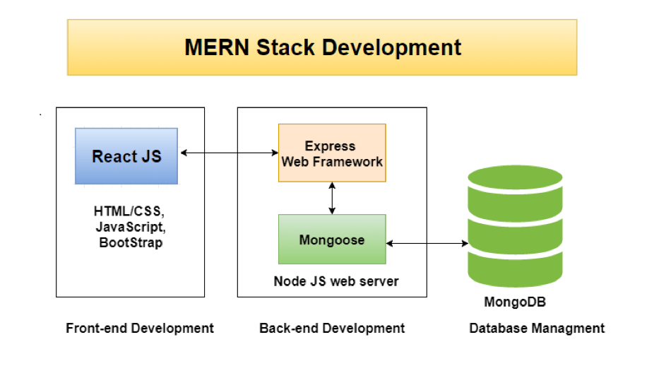

How to Build a High-Performance MERN Stack Blog
Published on by Kiran Kumari
Building a MERN stack blog is one of the best ways to master modern web development. By combining MongoDB, Express, React, and Node.js, you can create a dynamic, SEO-friendly application that handles high traffic with ease.
Table of Contents
Setting up the Backend with Node.js and Express
First, we need to initialize our server. Using npm init allows us to manage our dependencies efficiently. In your server.js file, ensure you are using CORS to allow requests from your frontend.

Connecting MongoDB Atlas for Data Storage
A MERN stack tutorial wouldn't be complete without database integration. MongoDB provides the flexibility of a NoSQL database, making it perfect for blog posts and user profiles.
If you're new to databases, check out our guide on optimizing MongoDB queries.
Creating the React Frontend
React handles the "V" in MVC. We will use hooks like useEffect to fetch our blog data from the Express API.
For more details on state management, refer to the Official React Documentation.